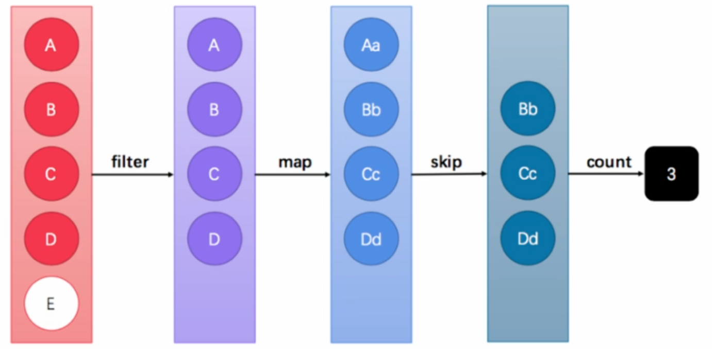
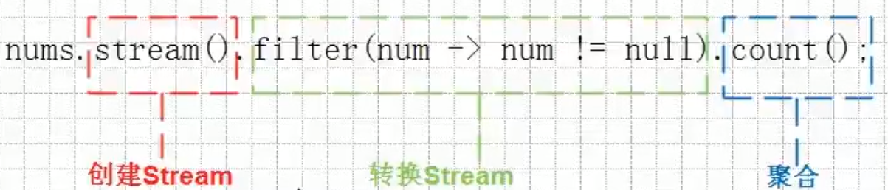
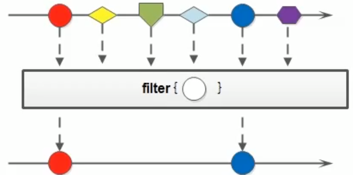
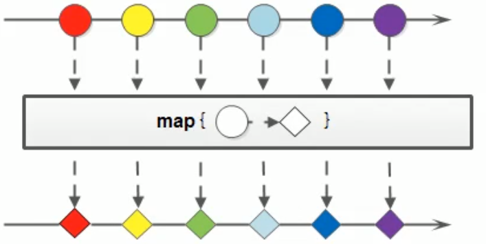
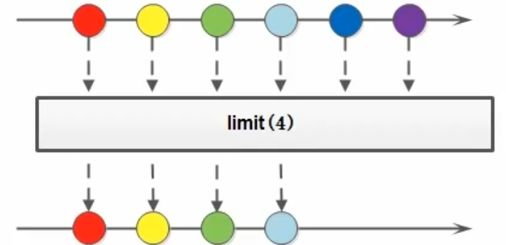
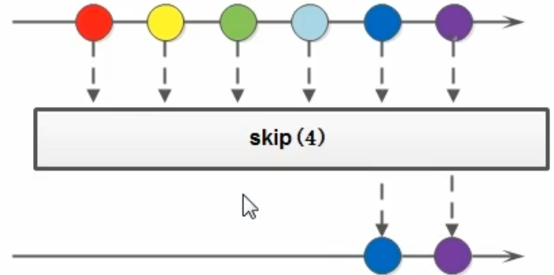

JDK8新特性
Stream流
- 在Java 8中，得益于Lambda所带来的函数式编程，引入了一个全新的Stream概念，用于解决已有集合类库既有的弊端。
引言
传统集合循环遍历的弊端
几乎所有的集合（如 Collection 接口或 Map 接口等）都支持直接或间接的遍历操作
Java 8循环遍历的弊端的Lambda让我们可以更加专注于做什么（What），而不是怎么做（How）- for循环的语法就是“怎么做”
- for循环的循环体才是“做什么”
为什么使用循环？因为要进行遍历。但循环是遍历的唯一方式吗？遍历是指每一个元素逐一进行处理，而并不是从第一个到最后一个顺次处理的循环。前者是目的，后者是方式。
在Java 8之前的做法可能为：
1 | List<String> list = new ArrayList<>(); |
每当我们需要对集合中的元素进行操作的时候，总是需要进行循环、循环、再循环。循环是做事情的方式，而不是目的。另一方面，使用线性循环就意味着只能遍历一次。如果希望再次遍历，只能再使用另一个循环从头开始。
Stream的更优写法
下面来看一下借助Java 8的Stream API，什么才叫优雅：
1 | List<String> list = new ArrayList<>(); |
直接阅读代码的字面意思即可完美展示无关逻辑方式的语义：获取流、过滤姓张、过滤长度为3、逐一打印。
代码中并没有体现使用线性循环或是其他任何算法进行遍历，我们真正要做的事情内容被更好地体现在代码中。
1.2 流式思想概述
注意：暂时忘记对传统IO流的固有印象！ 整体来看，流式思想类似于工厂车间的“生产流水线”。
当需要对多个元素进行操作（特别是多步操作）的时候，考虑到性能及便利性，我们应该首先拼好一个“模型”步骤方案，然后再按照方案去执行它。

这张图中展示了过滤、映射、跳过、计数等多步操作，这是一种集合元素的处理方案，而方案就是一种“函数模型”。图中的每一个方框都是一个“流”，调用指定的方法，可以从一个流模型转换为另一个流模型。而最右侧的数字 3是最终结果。
这里的
filter、map、skip都是在对函数模型进行操作，集合元素并没有真正被处理。只有当终结方法 count 执行的时候，整个模型才会按照指定策略执行操作。而这得益于Lambda的延迟执行特性。
备注：“Stream流”其实是一个集合元素的函数模型，它并不是集合，也不是数据结构，其本身并不存储任何元素（或其地址值）。
Stream（流）是一个来自数据源的元素队列
- 元素是特定类型的对象，形成一个队列。 Java中的Stream并不会存储元素，而是按需计算。
- 数据源/流的来源。 可以是集合，数组等。
和以前的Collection操作不同， Stream操作还有两个基础的特征：
Pipelining: 中间操作都会返回流对象本身。 这样多个操作可以串联成一个管道， 如同流式风格（fluent style）。 这样做可以对操作进行优化， 比如延迟执行(laziness)和短路(short-circuiting)。- 内部迭代： 以前对集合遍历都是通过Iterator或者增强for的方式, 显式的在集合外部进行迭代， 这叫做外部迭代。 Stream提供了内部迭代的方式，流可以直接调用遍历方法。
当使用一个流的时候，通常包括三个基本步骤：获取一个数据源（source）→ 数据转换→执行操作获取想要的结果
1.3 获取流
java.util.stream.Stream<T>是Java 8新加入的最常用的流接口。（这并不是一个函数式接口。）获取一个流非常简单，有以下几种常用的方式：
所有的
Collection集合都可以通过stream默认方法获取流；1
default Stream<E> stream()
Stream接口的静态方法of可以获取数组对应的流。1
static <T> Stream<T> of(T... values) 参数是一个可变参数,那么我们就可以传递一个数组
根据Collection获取流
- 首先，
java.util.Collection接口中加入了default方法 stream 用来获取流，所以其所有实现类均可获取流。
1 | //把集合转换为Stream流 |
根据Map获取流
java.util.Map 接口不是 Collection 的子接口，且其K-V数据结构不符合流元素的单一特征，所以获取对应的流需要分key、value或entry等情况：
1 | Map<String,String> map = new HashMap<>(); |
根据数组获取流
- 如果使用的不是集合或映射而是数组，由于数组对象不可能添加默认方法，所以 Stream 接口中提供了静态方法 of ，使用很简单：
1 | //把数组转换为Stream流 |
备注： of 方法的参数其实是一个可变参数，所以支持数组。
1.4 常用方法

流模型的操作很丰富，这里介绍一些常用的API。
这些方法可以被分成两种：
- 延迟方法：返回值类型仍然是 Stream 接口自身类型的方法，因此支持链式调用。（除了终结方法外，其余方 法均为延迟方法。）
- 终结方法：返回值类型不再是 Stream 接口自身类型的方法，因此不再支持类似 StringBuilder 那样的链式调 用。本小节中，终结方法包括 count 和 forEach 方法。
逐一处理：forEach
虽然方法名字叫 forEach ，但是与for循环中的“for-each”昵称不同。
1 | void forEach(Consumer<? super T> action); |
该方法接收一个 Consumer 接口函数，会将每一个流元素交给该函数进行处理。
复习Consumer接口
1 | java.util.function.Consumer<T>接口是一个消费型接口。 |
基本使用：
1 | public static void main(String[] args) { |
过滤：filter
可以通过 filter 方法将一个流转换成另一个子集流。方法签名：
1 | Stream<T> filter(Predicate<? super T> predicate); |
该接口接收一个 Predicate 函数式接口参数（可以是一个Lambda或方法引用）作为筛选条件。

复习Predicate接口
此前我们已经学习过 java.util.stream.Predicate 函数式接口，其中唯一的抽象方法为：
1 | boolean test(T t); |
该方法将会产生一个boolean值结果，代表指定的条件是否满足。如果结果为true，那么Stream流的 filter 方法 将会留用元素；如果结果为false，那么 filter 方法将会舍弃元素。
基本使用
Stream流中的 filter 方法基本使用的代码如：
1 | public static void main(String[] args) { |
在这里通过Lambda表达式来指定了筛选的条件：必须姓张。
映射：map
如果需要将流中的元素映射到另一个流中，可以使用 map 方法。方法签名：
1 | <R> Stream<R> map(Function<? super T, ? extends R> mapper); |
该接口需要一个 Function 函数式接口参数，可以将当前流中的T类型数据转换为另一种R类型的流。

复习Function接口
此前我们已经学习过 java.util.stream.Function 函数式接口，其中唯一的抽象方法为：
1 | R apply(T t); |
这可以将一种T类型转换成为R类型，而这种转换的动作，就称为“映射”。
基本使用
Stream流中的 map 方法基本使用的代码如：
1 | public static void main(String[] args) { |
统计个数：count
正如旧集合 Collection 当中的 size 方法一样，流提供 count 方法来数一数其中的元素个数：
1 | long count(); |
该方法返回一个long值代表元素个数（不再像旧集合那样是int值）。基本使用
1 | public static void main(String[] args) { |
取用前几个：limit
limit 方法可以对流进行截取，只取用前n个。方法签名：
1 | Stream<T> limit(long maxSize); |
参数是一个long型，如果集合当前长度大于参数则进行截取；否则不进行操作。基本使用

1 | public static void main(String[] args) { |
跳过前几个：skip
如果希望跳过前几个元素，可以使用 skip 方法获取一个截取之后的新流：
1 | Stream<T> skip(long n); |
如果流的当前长度大于n，则跳过前n个；否则将会得到一个长度为0的空流。基本使用：

1 | public static void main(String[] args) { |
组合：concat
如果有两个流，希望合并成为一个流，那么可以使用 Stream 接口的静态方法 concat ：
1 | static <T> Stream<T> concat(Stream<? extends T> a, Stream<? extends T> b) |
备注：这是一个静态方法，与 java.lang.String 当中的 concat 方法是不同的。
该方法的基本使用代码如：
1 | public static void main(String[] args) { |
JDK5新特性
可变参数
- 在JDK1.5之后，如果我们定义一个方法需要接受多个参数，并且多个参数类型一致，我们可以对其简化成如下格式：
- … 用在参数上，称之为可变参数。
1 | 修饰符 返回值类型 方法名(参数类型... 形参名){ } |
- 其实这个书写完全等价与
1 | 修饰符 返回值类型 方法名(参数类型[] 形参名){ } |
只是后面这种定义，在调用时必须传递数组，而前者可以直接传递数据即可【简单之处】。
如果在方法书写时，这个方法拥有多参数，参数中包含可变参数，可变参数一定要写在参数列表的末尾位置。
1 | public class ChangeArgs { |
JDK9新特性
对集合添加的优化
通常，我们在代码中创建一个集合（例如，List 或 Set ），并直接用一些元素填充它。 实例化集合，几个 add方法 调用，使得代码重复。
1 | public class Demo01 { |
Java 9，添加了几种集合工厂方法,更方便创建少量元素的集合、map实例。新的List、Set、Map的静态工厂方法可以更方便地创建集合的不可变实例。
例子：
1 | public class HelloJDK9 { |
需要注意以下两点：
of方法只适用于List接口,Set接口,Map接口,不适用于接接口的实现类
of方法的返回值是一个不能改变的集合,集合不能再使用add,put方法添加元素,会抛出异常
Set接口和Map接口在调用of方法的时候,不能有重复的元素,否则会抛出异常
原文作者: 掘金木匠
原文链接: http://goldcarpenter.github.io/2020/03/10/jdk8新特性_Part3/
版权声明: 转载请注明出处(必须保留作者署名及链接)